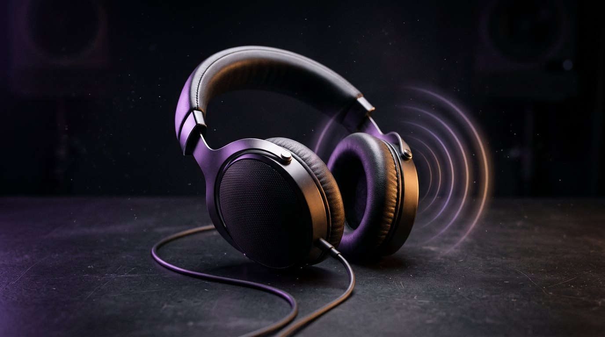

You don't need a 3Dio microphone or a treated room to make ASMR audio in 2026. Modern AI voices can whisper, pause, breathe, and hold a slow, sleepy pace well enough that most listeners can't tell the difference from a real soft-spoken narrator — and you can generate a full night of sleep audio from a laptop for almost nothing. Here's the honest part, though: AI can do the voice, not the textures. Tapping on wood, brushing a microphone, crinkling paper — none of that can be faked convincingly by a voice model. This guide shows you exactly what AI is good at, what still needs a real mic, and how to combine the two.
I've spent this year working with AI voices — I made £700 with voice cloning on ElevenLabs in 2026 — so this isn't theory. Below is the workflow I'd actually use: write a slow script, generate the voice in short chunks, layer real textures underneath, and master it for headphones.
The current generation of voice models is genuinely good at the vocal side of ASMR. Whispered speech is the standout: a good model holds a soft, breathy whisper without drifting into a stage whisper or going robotic, which is exactly what sleep tracks need. Soft-spoken narration is just as strong — calm, bedtime-story delivery with natural intonation.
Pacing is the quiet superpower. You can slow a voice down, stretch the pauses between lines, and place breaths where a human narrator would take them. Reworking pacing on a real recording means re-recording; with AI, you regenerate a line with more space around it. That alone saves hours on every track.
Multiple voices is another real edge. A series with three different soft-spoken narrators, or a sleep story with a narrator plus a second character, can be cast in an afternoon from stock voices — no scheduling, no sessions, no retakes. And consistency comes free: a model never gets a sore throat, never has a bad-mic day, and sounds identical in episode forty as it did in episode one. For a channel publishing nightly sleep audio, that matters more than people expect.
Now the other side, stated plainly: AI voices cannot fake physical trigger sounds. Tapping on wood, glass, or plastic. Crinkling paper or foil. Brushing bristles across a microphone grille. Scratching, water sounds, soft clicks and mouth sounds made centimetres from a real diaphragm. These are textures, not speech, and voice models are trained on speech.
You can hear the difference immediately. Generated "tapping" sounds like a drum sample; real tapping carries tiny variations in angle, pressure, and resonance that no model reproduces. And ASMR listeners are the most attentive audience on the internet — people who fall asleep to this every night notice in seconds.
So the rule is simple: if the sound comes from vocal cords, AI can probably do it. If it comes from an object, a surface, or physical contact with a microphone, you need the real thing. That doesn't kill the AI workflow — it just means the textures get recorded and the voice gets generated.
Route A: text to voice. Pick a stock soft voice, paste your script, generate. This is the fastest and cheapest route — minutes from idea to finished voice track — and it's genuinely good for whispered sleep audio, guided relaxation, and soft-spoken narration where your own voice doesn't matter. The tradeoff: anyone can use the same stock voices, so your edge has to come from the script and the sound design, not the voice itself.
Route B: clone your own whisper. Record around 30 minutes of clean audio of yourself speaking softly — a quiet room, no background noise, steady distance from the mic — and train a clone of your own voice. Then you can whisper with it at 2am without waking anyone, generate retakes without re-recording, and keep one recognisable voice across every upload. The 30 minutes of clean recording is the real cost here: rushed or noisy source audio produces a clone that sounds wrong at whisper volume, where every artefact shows. Take the session seriously and the clone repays it.
Route C: hybrid (recommended). Record the textures yourself — tapping, brushing, page turns, room tone — and generate the voice. Then layer them together. The voice carries the script, the real textures carry the tingles, and the combination sounds like a full studio production. This is the route I'd recommend to anyone serious about ASMR as a channel or a product. It needs a mic (see the gear section below), but it's still a fraction of the cost and time of recording everything live.
Forums will tell you to buy a binaural 3Dio-style rig, acoustic panels, and an expensive microphone before uploading anything. Ignore that. Here's what's genuinely needed for each route.
Voice-only (Routes A and B): a laptop and headphones. The voice is generated, so your recording gear barely matters. A phone mic is fine to start for the Route B training recording if the room is quiet — record in a wardrobe full of clothes and you'll be shocked how clean it sounds.
Hybrid (Route C): a USB mic. A Blue Yeti or equivalent with a pop filter is plenty for tapping, brushing, and room tone. Record close, record quiet, record lots of variations. Buy the fancy binaural setup later, after the channel has earned it.
YouTube plus Patreon is the classic stack: YouTube for discovery and ad revenue, Patreon for early access, exclusive tracks, and custom requests from subscribers. Sleep content earns long watch times, which the algorithm rewards.
Sleep and meditation apps license or commission relaxation audio. Pitch finished tracks, not ideas — a small portfolio of polished sleep audios opens doors a pitch deck never will.
Whisper-narrated audiobooks are an under-served niche: short fiction, poetry, and public-domain classics read in a soft voice. Services like FastAudiobook turn a full book into whisper-narrated audio, and you can price per finished hour like any other narrator.
Commissioned audio rounds it out: custom sleep tracks, name-inclusion relaxations, brand work for wellness companies. Start with a simple rate card per minute of finished audio and raise it as your backlog grows.
Can AI whisper convincingly enough for ASMR?
Yes — whispered speech and soft-spoken narration are what current voice models do best. Where they fall short is physical trigger sounds like tapping and brushing, which still need a real object and a real mic.
How much audio do I need to clone my own voice?
Around 30 minutes of clean, quiet recording. Quality matters more than quantity: consistent distance, no background noise, and soft delivery if you plan to whisper with the clone.
Do I need an expensive microphone?
Not to start. Voice-only tracks need nothing but a laptop and headphones, and a phone mic is fine for a first cloning session. Buy a USB mic only if you go hybrid and record your own textures.
Can I sell ASMR audio made with AI voices?
Yes, on platforms that allow synthetic voices — YouTube, Patreon, audiobook stores, and direct commissions all work. Always check the platform's current AI policy and disclose the AI voice where required.
Do I have to tell listeners the voice is AI?
Where the platform requires disclosure, yes — and it's good practice everywhere else. Label it once in the description and move on; most listeners care about the experience, not the tool.
More experiments like this on the posts page.